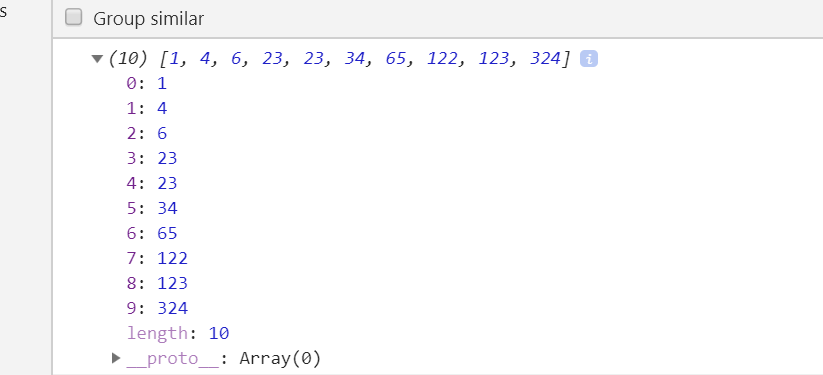

记录一个插入排序写法
<script>
var arr = [123,34,23,6,1,4,23,324,65,122];
for (let i =1, j = i ; i < arr.length; j = ++i) {
var temp = arr[i];
while(j-- > 0 && arr[j] > temp){
arr[j + 1] = arr[j];
}
arr[j + 1] = temp;
}
console.log(arr)
</script>
运行结果：
